مختبر الأسنان الرقمي
مع التواصل في الوقت
الحقيقي
نحن نعمل على تمكين الآلاف من عيادات طب الأسنان من خلال تدفقات عمل مبتكرة لتعزيز رعاية المرضى وإحداث ثورة في طريقة فهمهم وطاقمهم والتعاون في العمل المخبري.
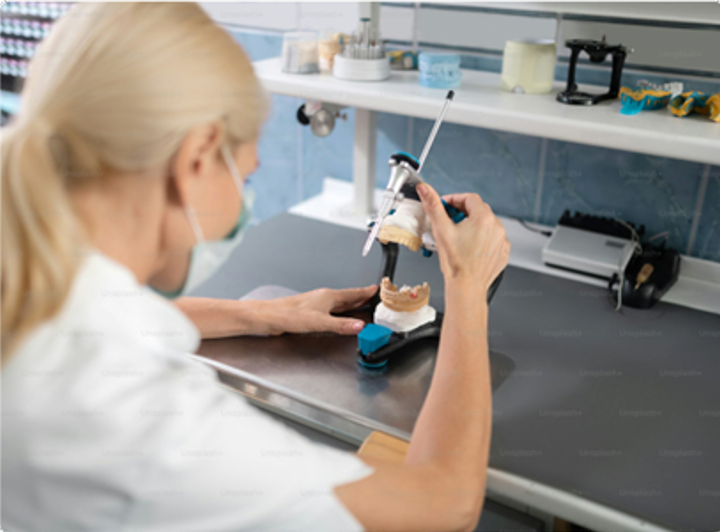
نحن نعمل على تمكين الآلاف من عيادات طب الأسنان من خلال تدفقات عمل مبتكرة لتعزيز رعاية المرضى وإحداث ثورة في طريقة فهمهم وطاقمهم والتعاون في العمل المخبري.
لا يمكن تحقيق ترميمات متسقة وملائمة إلا من خلال التواصل القوي. في لزورد، قمنا بتطوير طرق مبتكرة للتعاون مع أطباء الأسنان لدينا باستخدام قوة التكنولوجيا لإعادة تعريف ما هو ممكن لكل مريض.
احصل على مراجعات المسح في الوقت الفعلي واعتمد تصميمات الحالات ثلاثية الأبعاد للتحكم النهائي في عملك المخبري.
قم بتقديم خدمات تغير قواعد اللعبة مثل التيجان لمدة 5 أيام، وألهم أطباء الأسنان المميزين والأجزاء الجزئية المباشرة حتى النهاية.
يمكنك الوصول إلى فنيينا ذوي المستوى العالمي الذين يتمتعون بأحدث تقنيات طب الأسنان وأوقات التسليم الرائدة في الصناعة.
يمكنك الوصول إلى خبرائنا السريريين للحصول على إرشادات ودعم مخصصين عبر الهاتف أو الرسائل النصية أو البريد الإلكتروني أو الدردشة المباشرة خلال دقائق.
تقديم نتائج متوقعة للمرضى باستخدام التكنولوجيا والأدوات المبتكرة التي تمنحك التحكم النهائي.
قم بتنمية ممارستك من خلال الانتقال إلى سير العمل الرقمي باستخدام مجموعة أدوات طب الأسنان الرقمية المثبتة لدينا.
لا يمكن تحقيق ترميمات متسقة وملائمة إلا من خلال التواصل القوي. في لزورد، قمنا بتطوير طرق مبتكرة للتعاون مع أطباء الأسنان لدينا باستخدام قوة التكنولوجيا لإعادة تعريف ما هو ممكن لكل مريض.
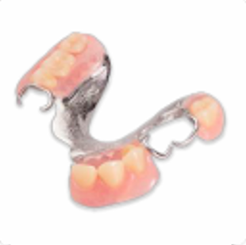
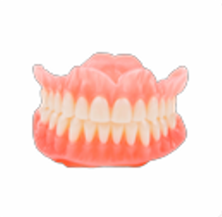
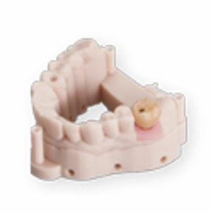
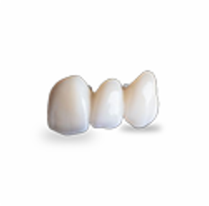
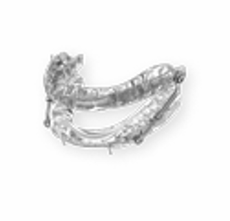
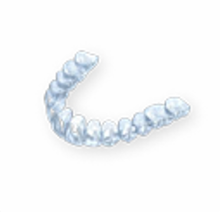
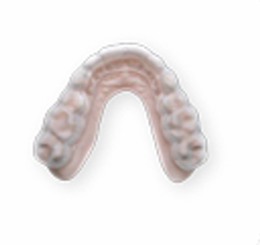
استمتع بمستوى من التحكم لم يكن ممكنًا من قبل.
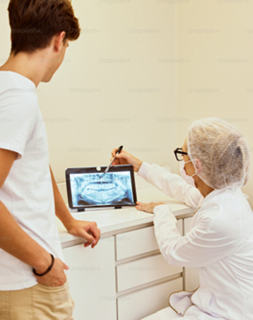
ابدأ بخطوة مسح دقيقة تمنحك نتائج متوقعة وتقلل الحاجة لإعادة العمل.
أرسل الحالات بسهولة عبر النظام الرقمي مع كل التفاصيل المطلوبة للفني.
راجع التصميم ووافق عليه قبل التنفيذ لضمان الدقة النهائية.
تابع كل مرحلة من الحالة لحظة بلحظة من منصة واحدة.
سرّع وقت التسليم مع سير عمل رقمي يقلل التأخير ويزيد الرضا.
اكتشف الفرق في الجودة والسرعة والدعم الرقمي المتكامل.
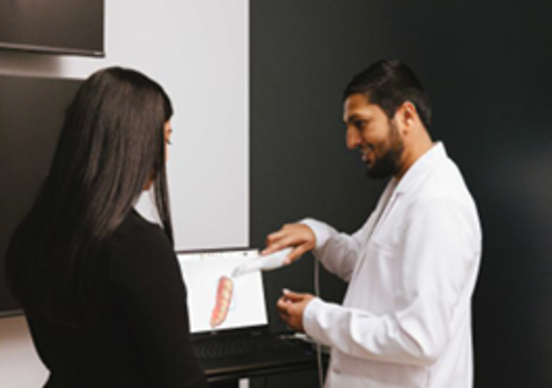
اجعل مساعديك يقومون بالمسح بثقة لكل سير عمل رقمي - استفد من التدريب غير المحدود لفريقك كلما دعت الحاجة.
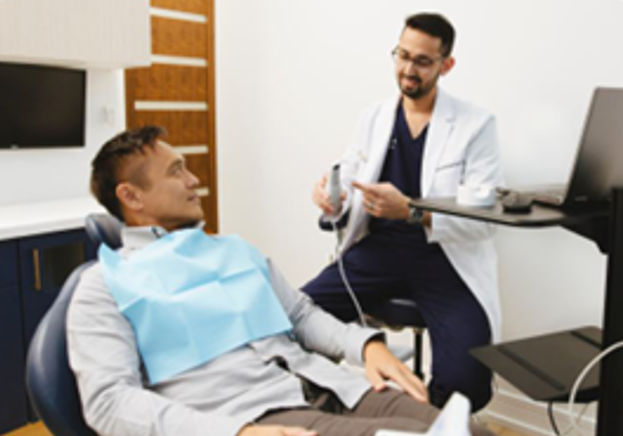
ارفع مستوى رعاية المرضى من خلال ابتكارات مثل أطقم الأسنان ذات المواعيد، والأجزاء الجزئية المباشرة، والماسح الضوئي رقم 1 في طب الأسنان الترميمي.
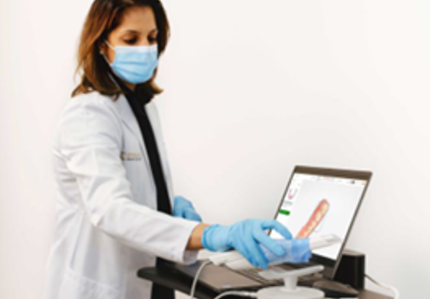
استخدم أدوات المسح المتقدمة - تصور التصميمات الرقمية والموافقة عليها، وتعزيز قبول الحالة، وتقديم نتائج ناجحة للمرضى مع التحكم المطلق.
تقييمات حالة 5 نجوم
تم الحفظ مقدمًا
تم تسليم الابتسامات السعيدة
قم بتطوير ممارساتك مع لزورد - الشريك الرقمي الوحيد المتكامل وقم بتحسين تجربة المريض والحلول السريرية ونمو الأعمال.
من خلال تقديم النموذج أدناه، أوافق على شروط الاستخدام وسياسة الخصوصية الخاصة بشركة لزورد، وأوافق على أن يتم الاتصال بي من قبل شركة لزورد عبر رسالة نصية.
لازورد منصة رقمية متكاملة لإدارة سير عمل مختبرات الأسنان.
دقة أعلى، سرعة أكبر، وتجربة أفضل للطبيب والمريض.
مختبر يعتمد على التصميم والتصنيع الرقمي بدل الطرق التقليدية.
سير عمل متكامل من المسح حتى التصنيع والتسليم.
الزركونيا، الزراعة، الأطقم، والتقويم الشفاف وغيرها.
سرعة تسليم أعلى، جودة ثابتة، ودعم رقمي مستمر.